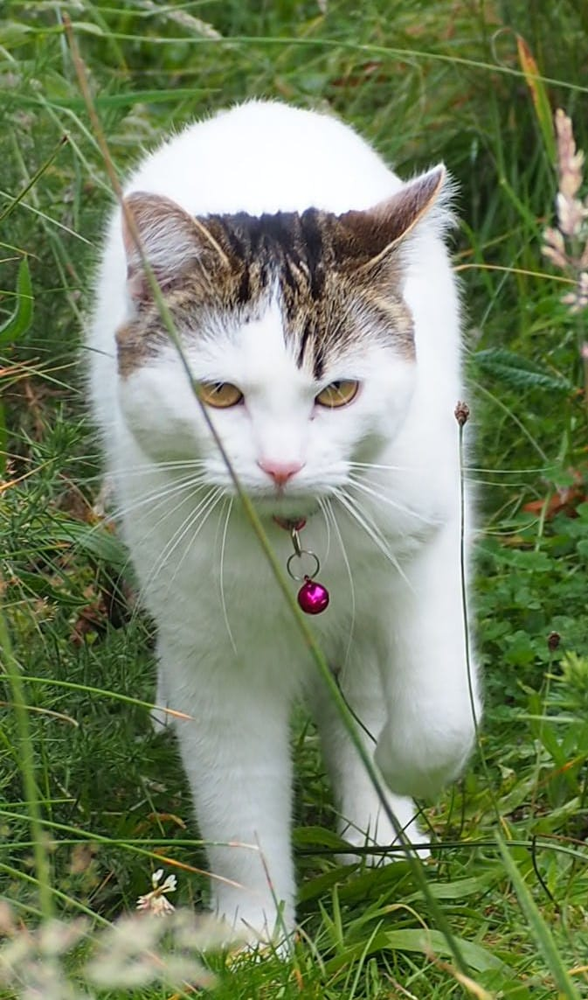

Małysz
From Wikipedia, the free encyclopedia
|
Małysz (Mała) Kędra (born September 9, 2020) is a Scottish cat known for her appearance in
a series of cartoons
Mortka and Małysz
together with her older step-sister
Mortka.
Early life and careerMałysz was born on September 9, 2020 in Edinburgh, Scotland. She is essentially white with tabby top of the head and tail and two black spots on her hind legs. One of five similarly looking siblings. She moved to Aberdeen in November 2020, where she joined a family with a year older cat Mortka and still lives there. In August 2022, both started starring in a series of cartoons Mortka and Małysz. Both are frequently seen on the Corunna Moor in the area of Bridge of Don in Aberdeen.Other characteristicsMałysz is a good hunter often employing a technique that relies on echo locating a mouse in a grass and leaping on it from a distance of up to two metres. Although not as agile as her older step-sister Mortka and seemingly clumsy, she is a very good sprinter and jumper. Unlike Mortka, she does not speak, with the exception of demanding food which happens every time when she sees an owner in the kitchen. Both Mortka and Małysz go for routine walks with their owners.Origin of the name and other namesMałysz is derived from Mała which means small or little in Polish. She is also often called Dyzio after the character in a poem Dyzio Marzyciel (en: Dyzio the Dreamer) by the Polish poet Julian Tuwim. Both Małysz and Mortka are collectively referred to as Głupce (Polish for the Stupid). Before moving to Aberdeen, she was called Bella by her first owners.Gender controversyMała refers to a female in Polish, while Małysz and Dyzio refer to a male, which sparked confusions about the sex or gender of Małysz. |  |